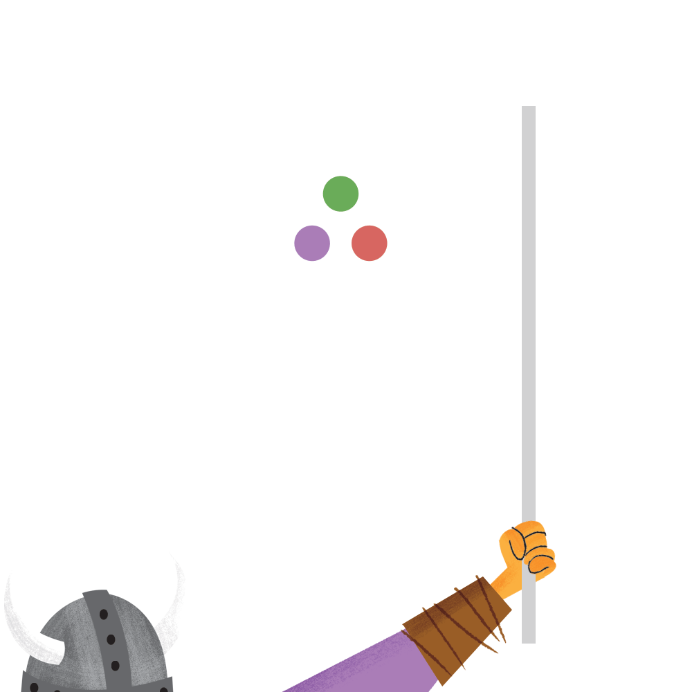
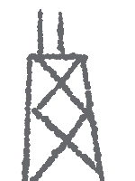

JuliaCon



SAVE THE DATE: JuliaCon 2015 will be held at the MIT Stata Center during the dates of Wednesday, June 24 through Sunday, June 28. More details forthcoming.
Thank you for making the first-ever JuliaCon a smashing success! Recordings of the talks and discussion sessions are now up and linked to in the schedule below.
The first-ever Julia conference will take place June 26 and 27 (Thursday and Friday) at the University of Chicago Gleacher Center in Chicago, Illinois. Expect two days of cutting-edge technical talks, a chance to rub shoulders with Julia's creators, and a weekend in a city known for its beautiful lakefront and world-class architecture.
| 8:00 AM | space opens, coffee and light breakfast |
| 8:15 AM | opening remarks |
| 8:30 AM | Tim Holy — Image Representation and Analysis |
| 9:10 AM | Pontus Stenetorp — Natural Language Processing with Julia |
| 9:50 AM | break |
| 10:20 AM | breakout session — speed vs. correctness (led by Arch Robison) |
| 11:10 AM | Iain Dunning / Joey Huchette — JuliaOpt - Optimization Packages for Julia |
| 11:50 AM | Madeleine Udell — Convex Optimization in Julia |
| 12:30 PM | lunch |
| 2:00 PM | Douglas Bates — Fitting Statistical Models with Julia |
| 2:40 PM | John Myles White — Representing Data in Julia |
| 3:20 PM | break |
| 3:35 PM | Simon Byrne — Distributions.jl |
| 4:15 PM | Dan Wlasiuk — A Brief History of TimeSeries |
| 4:25 PM | break |
| 4:40 PM | Reid Atcheson — Rapidly Iterating from Prototype to Near-C Performance in Julia: A Finite Element Method Case Study |
| 5:20 PM | Avik Sengupta — Moving Julia into Production |
| 8:00 AM | space opens, coffee and light breakfast |
| 8:30 AM | Arch Robison — Practical Vectorization in Julia |
| 9:10 AM | Jeff Bezanson — Introduction to Julia Internals |
| 9:50 AM | Julia Core Team panel |
| 10:20 AM | break |
| 10:40 AM | Leah Hanson — TypeCheck: Static Analysis in Julia |
| 11:20 AM | Keno Fischer — The design and implementation of the Julia Debugger |
| 12:00 PM | breakout session — package ecosystem (led by Iain Dunning) |
| 12:30 AM | lunch |
| 2:00 PM | Yuri Vishnevsky — Generative Art with Julia |
| 2:10 PM | Michael Bean — Publishing Online Interactive Julia Models |
| 2:50 PM | Daniel C. Jones — Gadfly: native Julia plotting and visualization |
| 3:30 PM | break |
| 3:50 PM | Spencer Russell — Realtime Audio in Julia with AudioIO.jl |
| 4:30 PM | breakout session — graphics and visualization (led by Daniel C. Jones) |
JuliaCon will be a single-track conference consisting primarily of contributed talks. All users and developers of Julia are encouraged to attend and submit a talk proposal. If you're doing something interesting with the language — academic work, commercial product, open source project, whatever — we want to hear about it. Talk proposals should include a title, abstract, estimated duration, and brief speaker bio. We have a limited amount of travel funding available for those in need, please indicate on the talk submission form if you would like to be considered for a grant. Talk proposals are now closed. If you submitted a talk, expect to hear back from us soon.
The conference will take place at Gleacher Center, a state-of-the-art facility on the Chicago River in downtown Chicago. Gleacher Center is a short walk from Millennium Station, the Red Line, and the Loop. There are many hotels within walking distance, including the Embassy Suites, Sheraton Chicago, and Hyatt Regency.
Tickets are sold out. We hope to see you next year!
Please note that we are still releasing the last few tickets to those already on the waitlist.
The day after the main event, hack@uchicago will host a (free) Julia Hack Day at the University of Chicago's main campus in Hyde Park. Hack Day is free but requires separate registration.
Please email us at juliacon2014@mit.edu with any questions or concerns.
All attendees, speakers, sponsors, and volunteers at our conference are required to agree with and follow the code of conduct. As this is a University of Chicago event, attendees should also respect the Policy on Unlawful Discrimination and Harassment.
JuliaCon is dedicated to providing a harassment-free conference experience for everyone, regardless of gender, sexual orientation, disability, physical appearance, body size, race, religion, or tabs vs spaces preference. We do not tolerate harassment of conference participants in any form. Sexual language and imagery is not appropriate for any conference venue.
Harassment includes offensive verbal comments, sexual images in public spaces, deliberate intimidation, stalking, following, harassing photography or recording, sustained disruption of talks or other events, inappropriate physical contact, and unwelcome sexual attention. Participants asked to stop any harassing behavior are expected to comply immediately.
If a participant engages in harassing behavior, the conference organizers may take any action they deem appropriate, including warning the offender or expulsion from the conference with no refund. If you are being harassed, notice that someone else is being harassed, or have any other concerns, please contact a member of conference staff immediately. Conference staff will be happy to help participants contact hotel/venue security or local law enforcement, provide escorts, or otherwise assist those experiencing harassment to feel safe for the duration of the conference. We value your attendance.
We expect participants to follow these rules at all conference venues and conference-related social events.
If an incident occurs please contact Stefan Karpinski <stefan@karpinski.org> or Leah Hanson <astrieanna@gmail.com>.
